Learn bodybuildr: from one block to a full report
Source:vignettes/learn-bodybuildr.Rmd
learn-bodybuildr.RmdThis tutorial starts with a single word on a page and ends with a multi-page PDF report that has a header, a footer, tables, plots, a theme and a block you write yourself. Each step adds one idea, explains what it does and why, and shows the result.
You can read this as a web page, or run the companion script
tutorial/learn-bodybuildr.R line by line in Positron or
RStudio. The script has the same code, with this text as comments.
Contents
Work through the parts in order the first time; each one builds on the last. Later, jump straight to the part you need. Every part ends with links to the previous part, this list, and the next part.
| Part | What you’ll learn |
|---|---|
| Part 0: Getting set up | Load the packages and a small helper for looking at your work |
| Part 1: Your first block | What a block is, how it measures itself, flexible blocks,
as_block()
|
| Part 2: Putting blocks together |
bb_stack(), bb_cols(), column widths,
alignment, nesting |
| Part 3: Making text look right | Text roles, text_style(), span() and
link(), Markdown and HTML |
| Part 4: Boxes, fills and spacing |
bb_box(), line_style(), gradients and
stripes, the three kinds of spacing |
| Part 5: Tables |
bb_table(), cell(), table styles, data
frames, sync_rows
|
| Part 6: Status marks, dots and legends |
bb_status(), bb_dot(),
bb_legend()
|
| Part 7: Plots, images and grobs | ggplots, fixed vs flexible heights, bb_image(),
bb_grob()
|
| Part 8: Pages |
bb_page(), page_template(), headers,
footers, tokens, banners, page_layout()
|
| Part 9: Documents |
bb_document(), optional pages, page-aware headers,
export_pdf()
|
| Part 10: Themes |
bb_theme(), custom colours and roles, three ways to
apply a theme |
| Part 11: Writing your own block |
new_block(), drawing with the theme, using your block
anywhere |
| Part 12: Debugging layouts | export_pdf(debug = TRUE) |
| Cheat sheet | Which function to reach for, by task |
Part 0: Getting set up
library(bodybuildr) # the package itself
library(ggplot2) # only used for the plots in Part 7
library(grid) # only used for the custom blocks in Part 11
set.seed(1) # so the "random" data is the same every timeA little helper to see things
bodybuildr only produces PDFs, so you need a quick way to look at a block while you learn. The helper below takes any block, puts it on a page that is exactly as tall as the block, and exports it to PDF:
- When you run the script, the PDF goes into a folder
called
bodybuildr-tutorial/in your working directory, and the helper prints its path so you can open it. - When the vignette is built, the helper also turns the PDF into a picture so it shows up on this page.
You don’t need to understand the helper yet. By the end of Part 8 every line in it will make sense.
preview_dir <- if (isTRUE(getOption("knitr.in.progress"))) {
file.path(tempdir(), "bodybuildr-tutorial") # building the vignette: keep files out of the way
} else {
"bodybuildr-tutorial" # running the script: next to you
}
dir.create(preview_dir, showWarnings = FALSE)
.preview_n <- 0
preview <- function(x, width = 6, height = NULL, theme = NULL) {
.preview_n <<- .preview_n + 1
file <- file.path(preview_dir, sprintf("step-%02d.pdf", .preview_n))
if (inherits(x, c("bb_page", "bb_document"))) {
# A finished page or document: export it as it is.
export_pdf(x, file)
} else {
# A loose block: make a page just big enough to hold it.
margin <- 0.2
if (is.null(height)) {
h <- with_theme(theme, as.numeric(measure_block(x, width - 2 * margin)))
height <- if (is.na(h)) 2.5 else h + 2 * margin # NA = "flexible", see Part 1
}
tpl <- page_template(width = width, height = height, margin_x = margin,
margin_top = margin, margin_bottom = margin,
theme = theme, background = "white")
export_pdf(bb_page(x, template = tpl), file)
}
in_knitr <- isTRUE(getOption("knitr.in.progress"))
if (!in_knitr || !requireNamespace("pdftools", quietly = TRUE)) {
message("Wrote ", file)
return(invisible(file))
}
n <- pdftools::pdf_info(file)$pages
pngs <- vapply(seq_len(n), function(i) knitr::fig_path(".png", number = sprintf("%02d-%d", .preview_n, i)),
character(1))
dir.create(dirname(pngs[1]), recursive = TRUE, showWarnings = FALSE)
pdftools::pdf_convert(file, dpi = 150, filenames = pngs, verbose = FALSE)
knitr::include_graphics(pngs, dpi = 150)
}Part 1: Your first block
1.1 Hello, block
Everything you put on a bodybuildr page is a block. The simplest one is text:
hello <- bb_text("Hello, bodybuildr!")
hello
#> <bb_text>Printing a block only tells you its type
(<bb_text>). A block is a description of something to
draw, not a drawing yet. To see it, export it:
preview(hello)1.2 What makes a block a block: it knows its own height
The one idea behind the whole package: a block can tell you
how tall it is once you tell it how wide it may be.
measure_block() asks that question:
measure_block(hello, width = 6)
#> [1] 0.125inchesThe answer is in inches. All of bodybuildr’s internal lengths are in
inches. Wherever a function takes a length you can pass a plain number
(inches) or a grid::unit() such as
unit(12, "pt") or unit(1, "cm").
For one short line, the height is one line of text. Things get more interesting with a longer paragraph:
paragraph <- bb_text(paste(
"Text wraps to whatever width it is given. Give it a wide space and it",
"uses few lines; squeeze it into a narrow column and it becomes taller.",
"Nobody has to type a height anywhere: the block measures itself."
))
measure_block(paragraph, width = 6) # wide: few lines
#> [1] 0.305572851805729inches
measure_block(paragraph, width = 2) # narrow: more lines, taller
#> [1] 1.20843711083437inches
preview(paragraph, width = 6)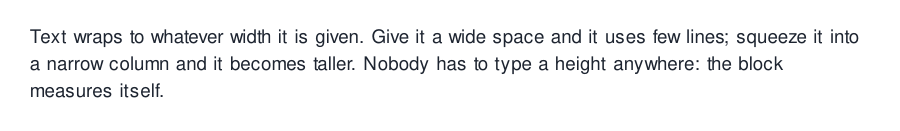
preview(paragraph, width = 2.4)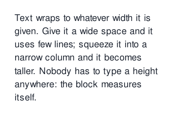
That’s why bodybuildr pages never need hand-tuned row heights. If a translation makes a sentence twice as long, the block gets taller and everything below moves down.
1.3 Flexible blocks: “I’ll take whatever height you give me”
Some blocks have no natural height. An empty space, or a plot, could
be any height. bodybuildr calls these flexible blocks,
and measure_block() returns NA for them:
measure_block(bb_spacer(), width = 6) # flexible empty space: NA
#> [1] NAinches
measure_block(bb_spacer(0.5), width = 6) # fixed empty space: 0.5 in
#> [1] 0.5inches
measure_block(bb_spacer(unit(18, "pt")), 6) # units work too: 18pt = 0.25 in
#> [1] 0.24906600249066inchesRemember the word flexible. It explains how plots stretch next to tables, how a footer gets pushed down, and much more later on.
1.4 You rarely need to call bb_text() yourself
Anywhere a block is expected, you can pass ordinary R objects.
bodybuildr converts them with as_block():
| You pass | It becomes |
|---|---|
| a string or number | bb_text() |
| a ggplot | bb_plot() |
| a grid grob | bb_grob() |
a path to a .png/.jpg, or an image
array |
bb_image() |
NULL |
nothing (it’s skipped) |
class(as_block("just a string"))
#> [1] "bb_text" "bb_block"
class(as_block(42))
#> [1] "bb_text" "bb_block"
as_block(NULL)
#> NULLSo bb_stack("a", "b") (next part) is the same as
bb_stack(bb_text("a"), bb_text("b")).
Part 2: Putting blocks together
A page is a few blocks arranged in two directions: top to bottom
(bb_stack()) and side by side (bb_cols()).
Those two functions, nested inside each other, can build almost any
layout.
2.1 Stacking blocks vertically
stack <- bb_stack(
"First line.",
"Second line.",
"Third line."
)
preview(stack)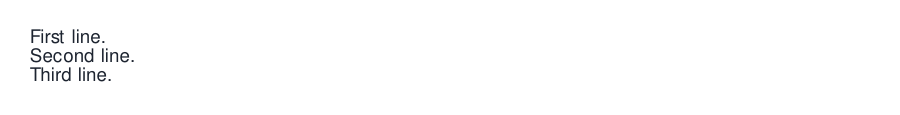
The blocks touch. Use gap to add space between them:
preview(bb_stack("First line.", "Second line.", "Third line.", gap = 0.15))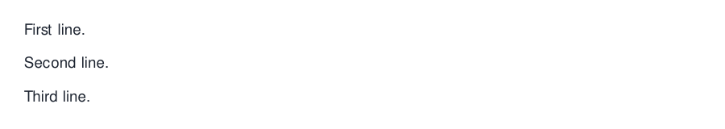
gap can also hold one value per pair of neighbours. With
three blocks there are two gaps:
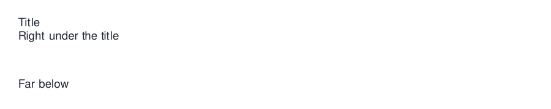
A stack’s height is the heights of its children plus the gaps, so a stack is itself a block that knows its height:
measure_block(bb_stack("a", "b", "c", gap = 0.15), width = 6)
#> [1] 0.675inches2.2 Placing blocks side by side
bb_cols() splits the available width into columns, one
per block:
left_text <- bb_text(paste(rep("This column has a lot to say.", 6), collapse = " "))
right_text <- bb_text("This one doesn't.")
preview(bb_cols(left_text, right_text, gap = 0.3))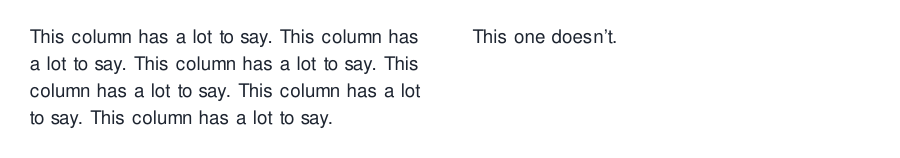
How it works:
- The row gets a width (here, the 5.6 in inside the preview page).
- It takes off the gap and splits the rest into equal columns.
- It asks each child how tall it is at its column width.
- The row is as tall as its tallest child.
The width goes down and the heights come back up. That’s the whole layout algorithm.
2.3 Choosing column widths
There are three ways to set widths:
# 1. NULL (the default): equal columns
equal <- bb_cols(left_text, right_text, gap = 0.3)
# 2. Numbers: proportions. c(2, 1) means "the first is twice as wide".
proportional <- bb_cols(left_text, right_text, widths = c(2, 1), gap = 0.3)
# 3. Units: mix fixed and proportional widths. "null" means "share what's
# left". Here the right column is exactly 1.5 in and the left gets the rest.
mixed <- bb_cols(left_text, right_text, gap = 0.3,
widths = unit(c(1, 1.5), c("null", "in")))
preview(bb_stack(equal, proportional, mixed, gap = 0.3))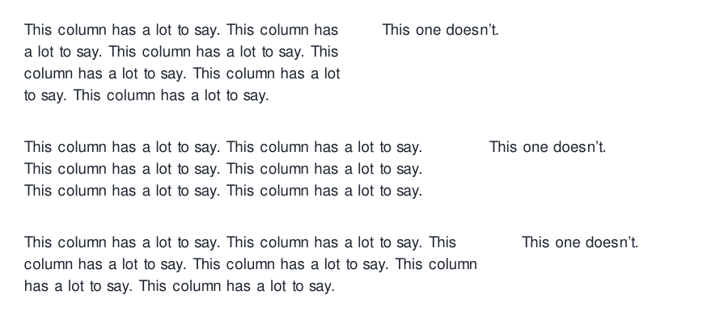
2.4 Vertical alignment and empty columns
By default, shorter columns sit at the top of the row.
valign changes that:
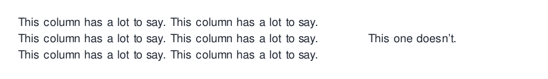
Passing NULL leaves a column empty, which is handy for
keeping alignment across several rows:
preview(bb_cols("one", NULL, "three"))2.5 Nesting: the real power
Since bb_stack() and bb_cols() both return
blocks, you can put one inside the other as deep as you like:
nested <- bb_cols(
bb_stack(
bb_text("A heading", style = "subheading"),
bb_text(paste(rep("Some body text under the heading.", 4), collapse = " ")),
gap = 0.05
),
bb_stack("Point A", "Point B", "Point C", gap = 0.05),
widths = c(3, 1), gap = 0.3
)
preview(nested)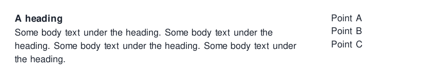
Part 3: Making text look right
3.1 Text roles
You’ve already seen style = "subheading". bodybuildr’s
theme defines a set of named text roles: a size, weight
and colour for each kind of text. Pass the name of a role as
style:
roles <- c("body", "note", "small", "subheading", "section", "refs", "legend", "footer")
preview(bb_stack(.list = lapply(roles, function(r) bb_text(paste("This is the", r, "role"), style = r)),
gap = 0.06))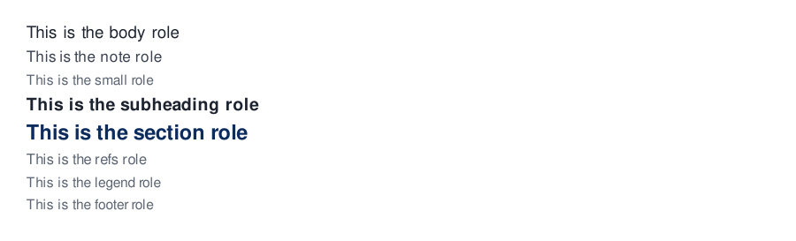
(.list = lets you hand a stack a list of blocks instead
of typing them out one by one.)
Roles mean you decide what kind of text something is, and the theme decides how that kind looks. Change the theme and every note on every page changes with it (Part 10).
3.2 text_style(): change only what you need
When a role isn’t quite right, use text_style(). It
lists only the properties you want to change.
Everything else is inherited:
preview(bb_stack(
# inherits from body text, changes weight and colour
bb_text("Body text, but bold and muted", style = text_style(weight = 700, color = "muted")),
# the first argument is a role to start from
bb_text("Start from 'small', make it italic", style = text_style("small", italic = TRUE)),
# letter case
bb_text("make me shout", style = text_style(case = "upper")),
# size in points, line height as a multiple of the size
bb_text("Big and airy", style = text_style(size = 16, lineheight = 1.6)),
gap = 0.1
))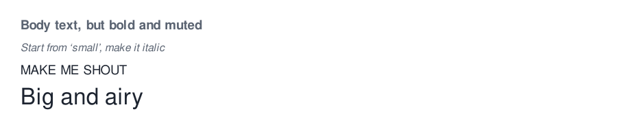
The properties are size, weight (100 to
900, or names like "semibold"), color,
family, italic, lineheight and
case.
Colours can be any R colour ("red",
"#1E5631") or the name of a theme colour such as
"primary", "accent", "muted",
"faint", "panel" or "rule_light".
Theme names are looked up when the page is drawn, so the same block can
be drawn with different themes.
3.3 Styling part of a sentence: span() and
link()
span() styles a piece of text inside a longer string. It
returns a string, so you build sentences with paste0():
sentence <- paste0(
"Coverage ", span("rose by 12%", weight = 700, color = "accent"),
" this year (", span("provisional", italic = TRUE, color = "muted"), ")."
)
preview(bb_text(sentence))link() marks a URL. In plain text it is underlined, and
PDF viewers make it clickable:
3.4 Plain text, Markdown and HTML
By default, text is plain: what you type is what
gets printed. Characters that mean something in Markdown, like
*, < or [1], are printed as
they are. A newline (\n) starts a new line.
preview(bb_text("Plain: values <80% get a *star* [1].\nSecond line."))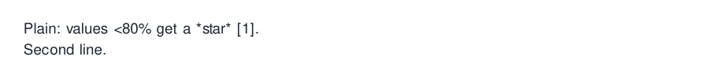
Set markup = "markdown" for bold, italics, bullet lists
and headings:
md <- "**Bold**, *italic*, and a list:
- first point
- second point"
preview(bb_text(md, markup = "markdown"))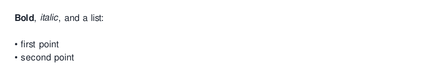
Or markup = "html" for a small HTML subset
(<b>, <i>,
<sup>, <sub>,
<br>, <span style>):
preview(bb_text("H<sub>2</sub>O and E = mc<sup>2</sup>", markup = "html"))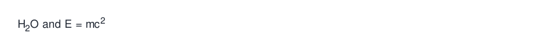
3.5 Alignment
preview(bb_stack(bb_text("Left (default)"),
bb_text("Centred", align = "center"),
bb_text("Right", align = "right")))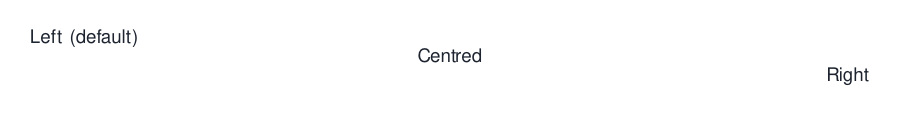
3.6 Measuring text width
Sometimes you need to know how wide a string will be, for example to
size a column to fit a label. text_width() tells you:
text_width("How wide am I?")
#> [1] 0.888888888888889inches
text_width("How wide am I?", style = text_style(size = 18, weight = 700))
#> [1] 1.875inchesPart 4: Boxes, fills and spacing
4.1 Putting a box around something
bb_box() wraps any block in a box. The look comes from
box_style():
preview(bb_box(
"I'm in a box.",
box_style(fill = "panel", border = "rule_strong", padding = 0.12, radius = 0.06)
))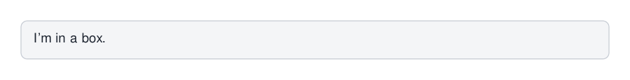
-
fill: background colour (theme names allowed) -
border: a colour, or aline_style()for width and dash pattern -
padding: space between the border and the content -
radius: rounded corners -
margin: space outside the border
box_style_panel() is a ready-made flat grey panel for
notes:
preview(bb_box(bb_text("A flat grey note panel.", style = "note"), box_style_panel()))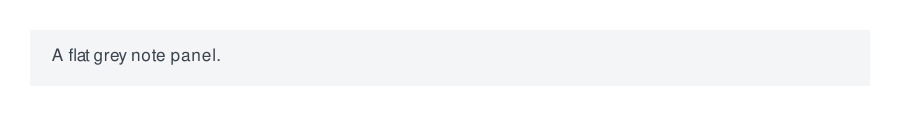
4.2 Lines
line_style() describes any line: borders, rules under
headers, table dividers. lwd is the line width and
lty the dash pattern ("22" means 2 on, 2
off):
preview(bb_box("Dashed accent border",
box_style(border = line_style("accent", lwd = 1.5, lty = "22"), padding = 0.12)))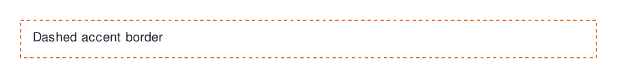
4.3 Padding with 1, 2 or 4 values
Padding and margin work like CSS: one value for all sides, two for (vertical, horizontal), four for (top, right, bottom, left):
preview(bb_stack(
bb_box("padding = 0.1", box_style(fill = "panel", padding = 0.1)),
bb_box("padding = c(0.05, 0.4)", box_style(fill = "panel", padding = c(0.05, 0.4))),
bb_box("padding = c(0, 0, 0, 1)", box_style(fill = "panel", padding = c(0, 0, 0, 1))),
gap = 0.1
))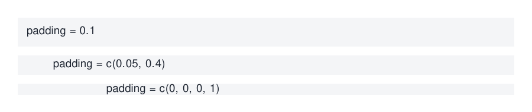
4.4 Fancy fills
Besides plain colours, a fill can be a gradient or diagonal stripes:
preview(bb_cols(
bb_box(bb_text("Gradient", style = text_style(color = "white", weight = 700)),
box_style(fill = gradient_fill(c("primary", "accent"), dir = "lr"), padding = 0.25)),
bb_box("Stripes", box_style(fill = stripe_fill(c("panel", "panel_alt"), angle = 45), padding = 0.25)),
gap = 0.2
))4.5 A trick: a box around a flexible block is flexible too
Wrap a flexible bb_spacer() in a filled box and you get
a coloured bar with no height of its own. Put it in a row and it
stretches to the height of its neighbour, which makes a neat accent bar
for a quote:
quote_text <- bb_text(paste(rep("A long quotation that wraps over several lines.", 4), collapse = " "),
style = text_style(italic = TRUE))
preview(bb_cols(
bb_box(bb_spacer(), box_style(fill = "accent")),
quote_text,
widths = unit(c(0.06, 1), c("in", "null")), gap = 0.15
))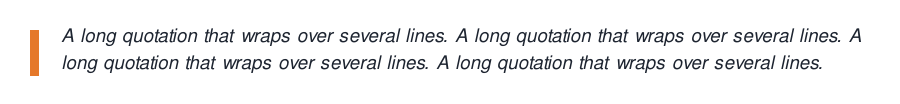
4.6 The three kinds of spacing (and why they’re kept apart)
bodybuildr keeps three kinds of spacing separate so they never interfere:
-
Page margins: the white border around the page. Set
once in
page_template()(Part 8). -
Layout gaps: space between blocks, set
with
gapinbb_stack(),bb_cols()andbb_page(). -
Box spacing:
paddingandmargininsidebox_style().
When something looks too spaced out, ask which of the three it is and change it there. Components never add page-level spacing on their own.
Part 5: Tables
5.1 The simplest table
A table is a list of rows, and each row is a list of cells:
simple <- bb_table(list(
list("Apples", "12"),
list("Bananas", "7"),
list("Cherries", "143")
))
preview(simple)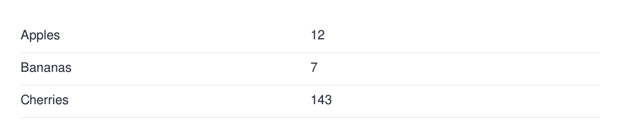
Rows are as tall as their content, so long text wraps and the row grows.
5.2 Header, widths and alignment
fruit <- bb_table(
list(list("Apples", "12"), list("Bananas", "7"), list("Cherries", "143")),
header = c("Fruit", "Count"),
widths = c(3, 1), # same rules as bb_cols()
align = c("left", "right") # one per column
)
preview(fruit)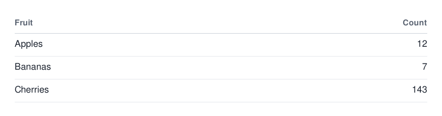
5.3 Styling columns and single cells
col_style styles whole columns. cell()
styles one cell:
styled <- bb_table(
list(
list("Total population", "45,696,159"),
list("Surviving infants", "530,193"),
list("Skilled birth attendance", cell("No data", style = text_style(color = "faint", italic = TRUE))),
list(cell("of which: urban", style = "small", indent = 0.2), "")
),
header = c("Indicator", "Value"),
widths = c(2, 1), align = c("left", "right"),
col_style = list(NULL, text_style(weight = 700)) # NULL = leave column 1 alone
)
preview(styled)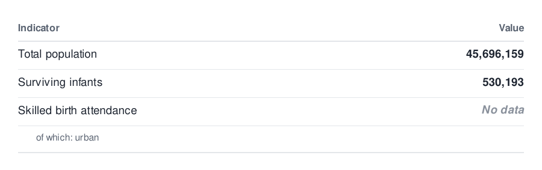
cell() also takes indent (for sub-rows),
markup and align.
5.4 Straight from a data frame
Pass a data frame and the column names become the header:
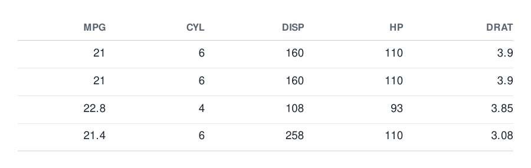
5.5 Two table looks
table_style() (the default) draws only horizontal rules.
table_style_grid() is the boxed spreadsheet look. Both take
arguments for every detail:
preview(bb_table(head(mtcars[, 1:5], 4), align = "right", style = table_style_grid()))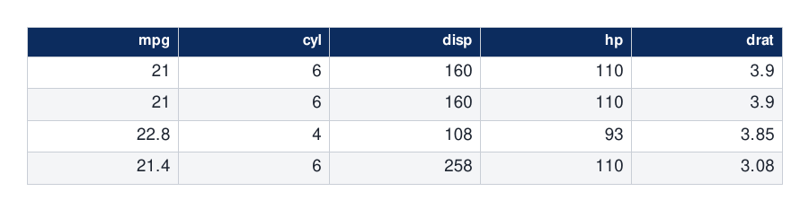
preview(bb_table(
head(mtcars[, 1:5], 4), align = "right",
style = table_style(divider = line_style("rule_faint"), # lighter lines between rows
header_rule = line_style("accent", 2), # thick coloured line under header
alt_fill = "panel") # zebra stripes
))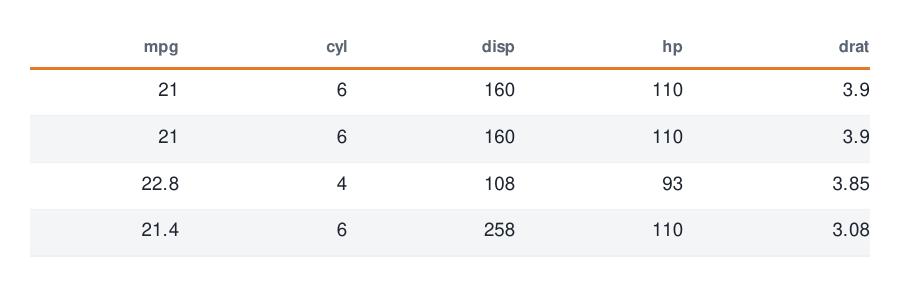
5.6 Any block can be a cell
Cells aren’t limited to text. Anything that is a block works, including the status icons and dots from the next part:
preview(bb_table(
list(list("Has a plan", bb_status("yes", label = "Yes")),
list("Funded", bb_status("no", label = "No")),
list("Audited", bb_status(NA, label = "Unknown")),
list("Stock-outs", bb_dot(c("accent", "accent", "rule_light")))),
header = c("Question", "Answer"), widths = c(2, 1)
))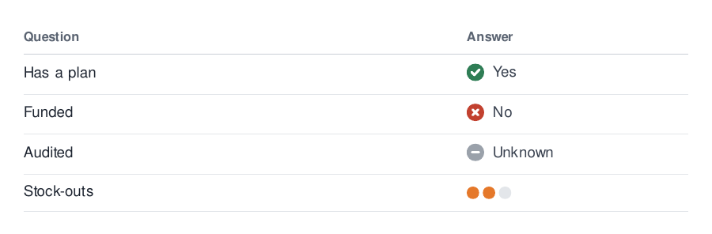
5.7 Lining up two tables side by side
Two tables in a row each size their rows independently, so the
dividers don’t line up. sync_rows = TRUE on the row fixes
that:
wordy <- bb_table(list(list("A row whose text wraps onto two lines in this narrow column"),
list("Short"),
list("Another row that is long enough to wrap")))
terse <- bb_table(list(list("x"), list("y"), list("z")))
preview(bb_stack(
bb_text("sync_rows = FALSE", style = "subheading"),
bb_cols(wordy, terse, gap = 0.3),
bb_text("sync_rows = TRUE", style = "subheading"),
bb_cols(wordy, terse, gap = 0.3, sync_rows = TRUE),
gap = 0.1
))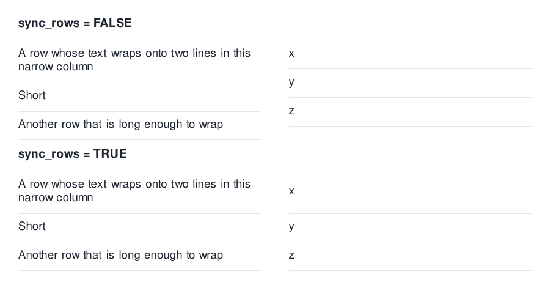
← Part 4 | Contents | Part 6: Status marks, dots and legends →
Part 6: Status marks, dots and legends
6.1 Status icons
bb_status() draws a filled circle with a check, a cross
or a dash. It understands
"yes"/"no"/"unknown" and also
TRUE/FALSE/NA:
preview(bb_cols(
bb_status("yes", label = "Meets target"),
bb_status(FALSE, label = "Below target"),
bb_status(NA, label = "No data"),
gap = 0.2
))The colours come from the theme’s status palette (Part 10).
6.2 Dots and small marks
bb_dot() draws one or more small marks in a row.
Colours, shapes and sizes are recycled, so one call can draw a whole
pattern:
6.3 Legends
A legend is a list of legend_key()s. There are six key
types: swatch, dot, diamond,
status, line and dash.
legend <- bb_legend(
list(
legend_key("swatch", "Below 80%", "#C8503F"),
legend_key("swatch", "80-94%", "#F2C14E"),
legend_key("swatch", "95% +", "#8CC49A"),
legend_key("dot", "Stock-out", "accent"),
legend_key("line", "Trend", "primary"),
legend_key("dash", "Target", "muted"),
legend_key("status", "Meets", state = "yes")
),
note = "National level"
)
preview(legend)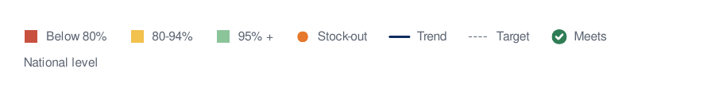
Legends wrap onto more lines when they run out of room, so they are blocks whose height depends on their width:
measure_block(legend, 7)
#> [1] 0.21875inches
measure_block(legend, 2.5)
#> [1] 0.875inches
preview(legend, width = 2.9)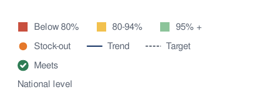
Part 7: Plots, images and grobs
7.1 A ggplot is a flexible block
Pass a ggplot anywhere a block goes. Without a height, a plot is flexible: it has no height of its own and takes the height it is given. In a row next to text, that means the height of the text:
p <- ggplot(data.frame(x = 1:30, y = cumsum(rnorm(30))), aes(x, y)) +
geom_line(colour = "#0C2C5E") +
theme_minimal()
explanation <- bb_stack(
bb_text("What happened", style = "subheading"),
bb_text(paste(rep("The plot on the left is exactly as tall as this column.", 5), collapse = " "),
style = "note"),
gap = 0.05
)
preview(bb_cols(p, explanation, widths = c(2, 1), gap = 0.3))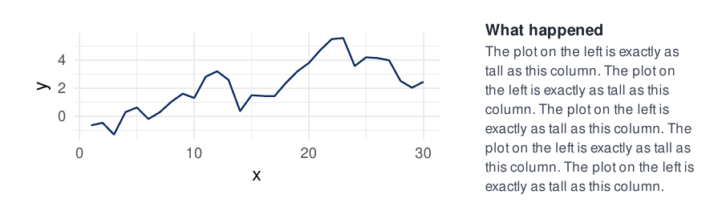
Make the text longer and the plot grows to match.
7.2 Fixed and minimum heights
fixed_plot <- bb_plot(p, height = 1.2) # always 1.2 in
min_plot <- bb_plot(p, min_height = 1.5) # flexible, never below 1.5 in
fixed_other <- bb_fixed(p, height = 0.8) # bb_fixed() works on ANY block
measure_block(fixed_plot, 6)
#> [1] 1.2inches
measure_block(min_plot, 6) # still NA: flexible
#> [1] NAinches
preview(bb_stack(fixed_plot, fixed_other, gap = 0.2))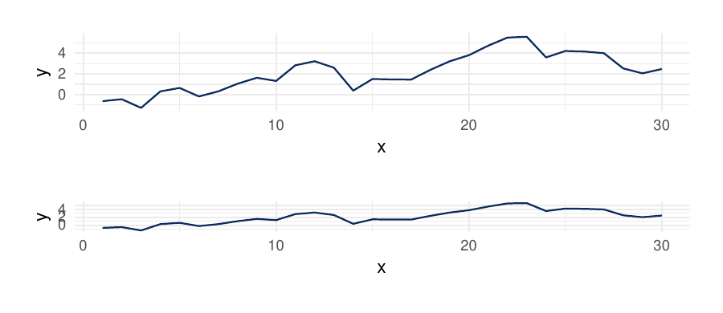
7.3 Images
bb_image() takes a .png/.jpg
path, or a numeric array (rows × columns × colour channels). Without a
height, an image keeps its natural aspect ratio at the width it
gets:
# a small gradient image built from numbers, so this works without any file
img <- array(c(outer(1:60, 1:120, function(i, j) (i + j) / 180),
outer(1:60, 1:120, function(i, j) j / 120),
matrix(0.6, 60, 120)), dim = c(60, 120, 3))
preview(bb_cols(
bb_image(img), # full column width, natural height
bb_image(img, height = 0.4, align = "left"), # fixed height, narrower than its slot
gap = 0.3
))7.4 Any grid drawing
bb_grob() wraps any grid grob. Give it a height, or
leave it flexible:
preview(bb_grob(circleGrob(r = 0.4, gp = gpar(fill = "#E5782A", col = NA)), height = 0.6))Part 8: Pages
So far every preview has been a loose block on a page cut to fit. Real reports use real pages.
8.1 Your first page
bb_page() stacks blocks from the top of the page down.
Like bb_stack(), it takes gap:
first_page <- bb_page(
bb_section_header("My first page"),
paragraph,
nested,
gap = 0.2
)
preview(first_page)By default a page is US Letter (8.5 × 11 in) with half-inch margins.
8.2 Section headers
bb_section_header() is a title with a small accent
marker and a rule underneath. refs adds muted references,
and section_header_style() changes everything else:
preview(bb_stack(
bb_section_header("Default section header", refs = "[1][2]"),
bb_section_header("No marker, thicker accent rule",
style = section_header_style(marker_color = NA, rule = line_style("accent", 2))),
gap = 0.15
))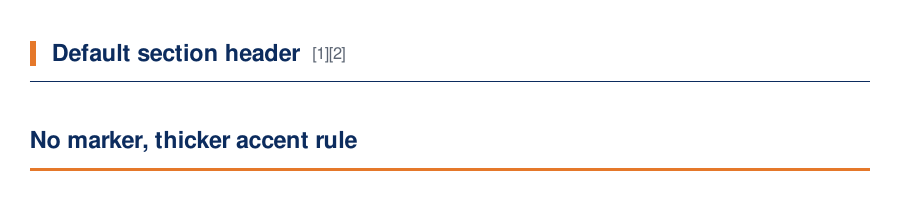
8.3 Page templates: size, margins, header and footer
Most reports repeat the same page setup on every page.
page_template() holds it once:
template <- page_template(
width = 8.5, height = 11, # page size in inches
margin_x = 0.6, # left & right margins
margin_top = 0.5, margin_bottom = 0.4,
header = bb_running_header("Field Report", "{region}"),
footer = bb_page_footer("My Organisation, 2026", "{region} · page {page} of {pages}"),
header_gap = 0.25 # space between header and body
)
page_north <- bb_page(
bb_section_header("Notes from the North"),
paragraph,
styled,
template = template,
gap = 0.2,
data = list(region = "North") # fills {region}
)
preview(page_north)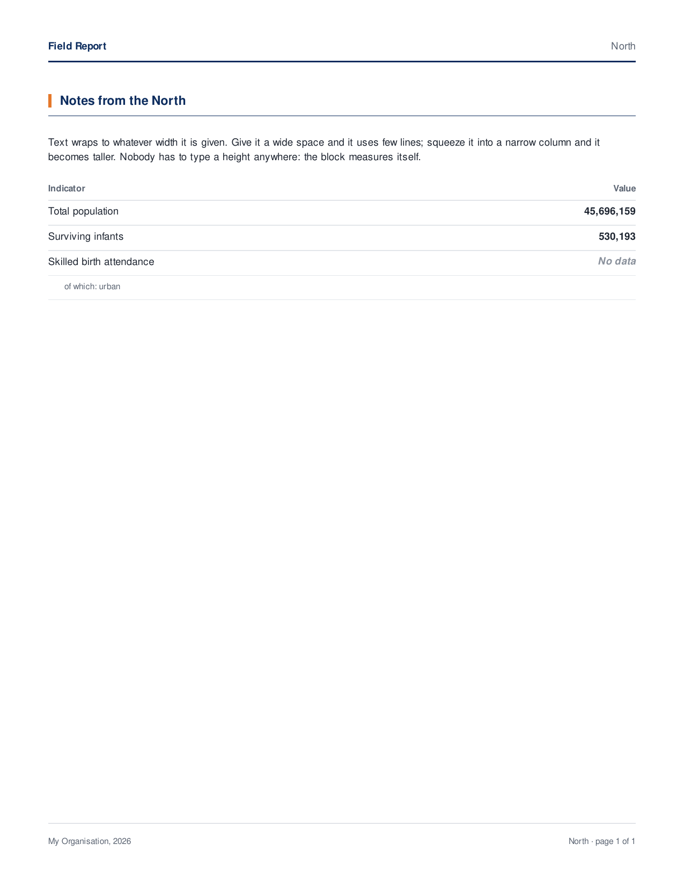
What to notice:
-
{region},{page}and{pages}are tokens.{page}and{pages}are filled in at export time. Anything else comes from the page’sdata. So one template serves every page. - The footer is pinned to the bottom margin. However little content there is, the footer stays in the same place on every page.
- The body runs between the header and the footer.
8.4 Filling the page: flexible blocks again
A flexible block in a page body gets all the height that’s left over.
A plain bb_spacer() pushes everything after it to the
bottom, and a plot with no height fills the gap:
preview(bb_page(
bb_section_header("The plot fills the rest of the page"),
paragraph,
p, # flexible: takes all the leftover height
bb_text("This line sits right on top of the footer.", style = "small"),
template = template, gap = 0.2, data = list(region = "Central")
))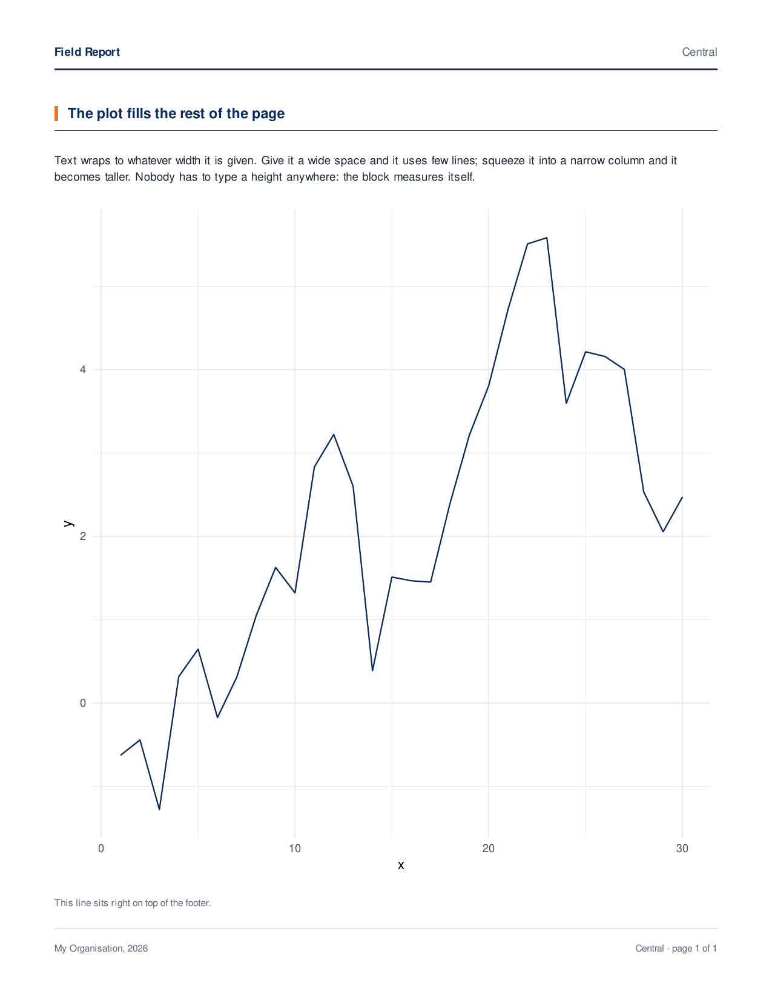
8.5 How much room is left? And what if it’s too much?
page_layout() measures a page without exporting it:
page_layout(page_north)[c("available", "used", "free")]
#> $available
#> [1] 8.91375
#>
#> $used
#> [1] 2.626441
#>
#> $free
#> [1] 6.287309free is in inches. If it’s negative, the content doesn’t
fit, and export_pdf() warns you and says by how much:
too_long <- bb_page(.list = rep(list(paragraph), 40), template = template, data = list(region = "X"))
page_layout(too_long)$free
#> [1] -3.309164For automated pipelines,
bb_page(..., overflow = "error") turns the warning into an
error so nothing silently runs off the page.
8.6 Banners and full-bleed blocks
A banner is a coloured band across the full width of the page. It ignores the side margins (it is full bleed). Used as a page header, it sits flush with the top edge:
banner_page <- bb_page(
bb_section_header("A page with a banner"),
paragraph,
# any block can be full bleed when it's a direct child of a page:
bb_full_bleed(bb_box(bb_text("Full-bleed band", style = text_style(color = "white")),
# 0.6 in side padding lines the text up with the page margin
box_style(fill = "accent", padding = c(0.12, 0.6)))),
template = template,
header = bb_banner("Annual Report", "North region, 2026"), # overrides the template header
gap = 0.2, data = list(region = "North")
)
preview(banner_page)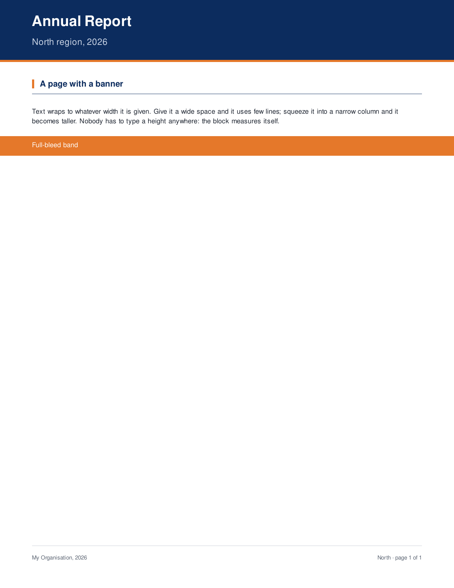
8.7 Placeholders for missing content
When a data source doesn’t provide something,
bb_placeholder() fills the space with a patterned panel and
a sentence. It is flexible, so in a row it takes the height of its
neighbour:
preview(bb_cols(
styled,
bb_placeholder("This country doesn't report subnational data."),
gap = 0.3
))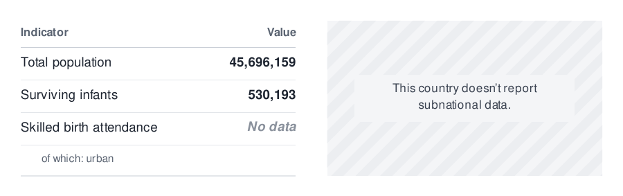
Part 9: Documents
9.1 Several pages in one PDF
bb_document() collects pages. export_pdf()
writes them into one file and numbers them:
page_south <- bb_page(bb_section_header("Notes from the South"), paragraph, fruit,
template = template, gap = 0.2, data = list(region = "South"))
doc <- bb_document(page_north, page_south)
preview(doc)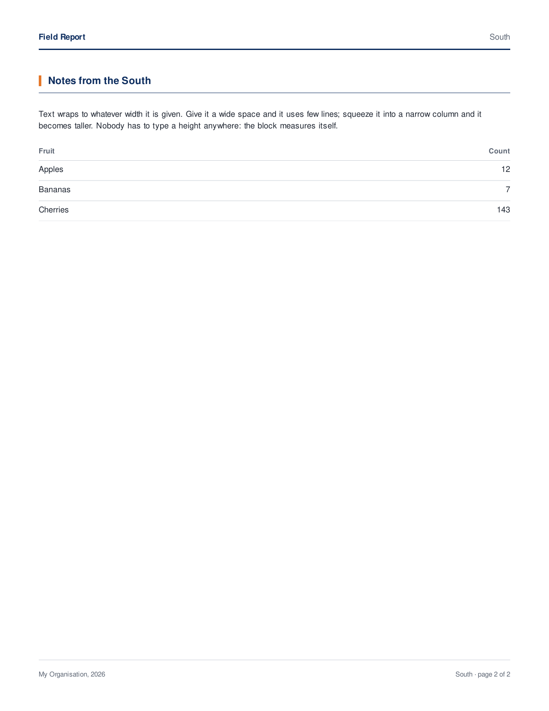
Look at the footers: “page 1 of 2”, “page 2 of 2”.
9.2 Optional pages
NULL pages are dropped before numbering. So you
can build a page only when there’s data for it, and the “page X of Y”
numbers stay right:
have_east_data <- FALSE
page_east <- if (have_east_data) bb_page("East", template = template) else NULL
doc <- bb_document(page_north, page_east, page_south) # still 2 pages
length(doc$pages)
#> [1] 29.3 Headers that depend on the page
A template’s header or footer can be a function that
gets the page context (ctx$page, ctx$pages,
ctx$data) and returns a block. That’s how you get a banner
on the cover and a running header on later pages:
smart_template <- page_template(
header = function(ctx) {
if (ctx$page == 1) bb_banner("Annual Report", "Cover page")
else bb_running_header("Annual Report", "page {page}")
},
footer = bb_page_footer("My Organisation", "{page} / {pages}")
)
preview(bb_document(
bb_page(bb_section_header("Introduction"), paragraph, template = smart_template),
bb_page(bb_section_header("Details"), paragraph, template = smart_template)
))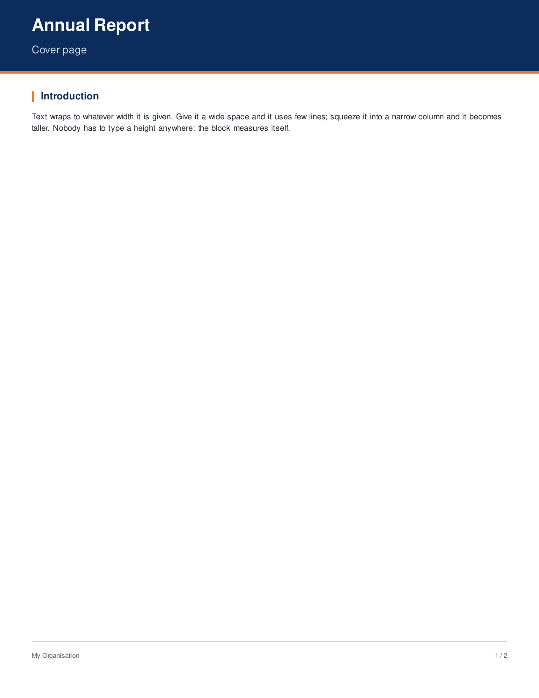
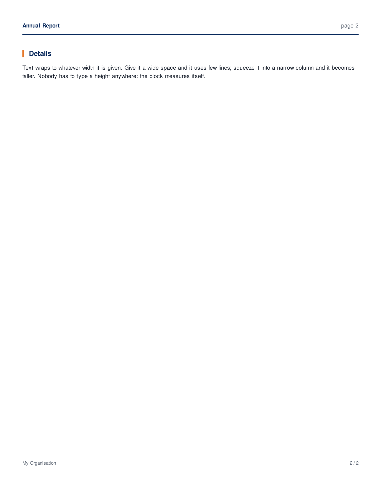
9.4 Exporting
export_pdf(doc, "my-report.pdf")export_pdf() uses the Cairo PDF device when available,
for full Unicode and proper font weights. Every page in one export must
have the same size.
Part 10: Themes
10.1 What a theme holds
A theme has three things:
- a palette: named colours (
primary,accent,muted,panel,rule_light, …) -
text roles: the
body,note,section, … styles from Part 3 - a status palette: the yes/no/unknown colours of
bb_status()
bb_get_theme()
#> <bb_theme> font: sans base size: 9 pt
#> colours: primary, accent, ink, text2, muted, faint, rule_strong, rule_light, rule_faint, panel, panel_alt, on_primary, on_primary_muted
#> text roles: body, table_body, note, small, subheading, section, refs, title, subtitle, running, running_right, table_header, legend, footer, status_label, placeholder10.2 Making your own theme
bb_theme() only needs what you want to change. Here’s a
green, serif theme with one new colour (moss) and one new
text role (callout):
forest <- bb_theme(
font = "serif",
base_size = 10, # body text size in points; all roles scale with it
colors = list(primary = "#1E5631", accent = "#C1A35F", panel = "#EEF3EC",
moss = "#4C7A34"), # a brand-new colour name
text = list(
section = text_style(italic = TRUE, weight = 400), # change an existing role
callout = text_style(size = 13, weight = 700, color = "moss") # a brand-new role
),
status = c(yes = "#4C7A34", no = "#A23B2A", unknown = "#9AA1AA")
)10.3 Same blocks, different theme
None of these blocks names a colour directly. They all use role and palette names, so a theme can restyle them:
themed_blocks <- bb_stack(
bb_section_header("A themed section"),
bb_text("Body text in the theme's font.", style = "body"),
bb_box(bb_text("A panel in the theme's panel colour.", style = "note"), box_style_panel()),
bb_status("yes", label = "Status colour from the theme"),
legend,
gap = 0.12
)
preview(themed_blocks) # default theme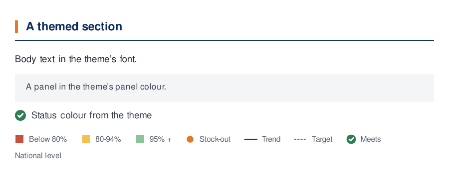
preview(themed_blocks, theme = forest) # forest theme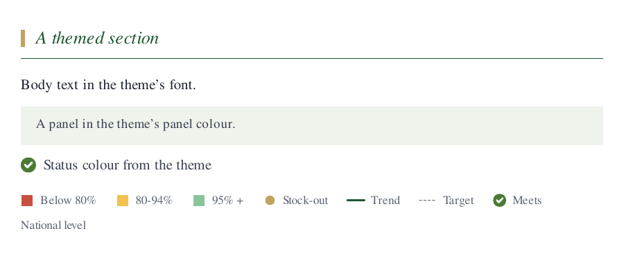
10.4 Three ways to apply a theme
# 1. On a page template: the theme applies while those pages are exported.
# This is the recommended way.
page_template(theme = forest)
# 2. Temporarily, for one expression:
with_theme(forest, measure_block(themed_blocks, 6))
# 3. Globally, for everything afterwards:
old <- bb_set_theme(forest)
bb_set_theme(old) # put the previous one backOne caveat: a custom role like callout
only exists in the theme that defines it. A block that uses
style = "callout" will fail with an “Unknown text role”
error under any other theme.
Part 11: Writing your own block
When nothing built in draws what you need, write a block. A block needs just two functions:
-
measure(width): “how tall are you at this width?” Return inches, orNAto be flexible. -
render(width, height): “draw yourself.” Return a grid grob. It’s drawn in a box exactlywidth×heightinches. Inside that box, grid’s"npc"units run from 0 (left/bottom) to 1 (right/top).
11.1 The simplest possible block: a coloured bar
bar <- new_block(
"bar", # a name for the block type
measure = function(width) 0.1, # always 0.1 in tall
render = function(width, height) rectGrob(gp = gpar(fill = "#E5782A", col = NA))
)
preview(bb_stack("Above the bar", bar, "Below the bar", gap = 0.08))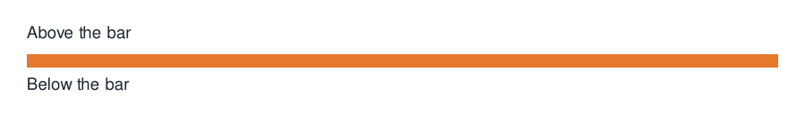
rectGrob() with no arguments fills its whole box, and
the box is exactly the size measure() asked for.
11.2 A block that uses the theme
Good blocks don’t hard-code colours or fonts. They read them from the theme at draw time, so they follow theme changes like built-in blocks do:
-
bb_get_theme()$colorsis the palette. -
text_gpar(style)turns a role name ortext_style()into grid’s graphics parameters (font, size, colour).
Here’s a labelled progress bar:
progress <- function(label, fraction, color = "primary") {
label_style <- text_style("small", weight = 700)
bar_height <- 0.1
spacing <- 0.04
# One line of text in inches: font size (points) x line height / 72
line_height <- function() {
gp <- text_gpar(label_style)
gp$fontsize * gp$lineheight / 72
}
new_block(
"progress",
measure = function(width) line_height() + spacing + bar_height,
render = function(width, height) {
palette <- bb_get_theme()$colors
fill <- palette[[color]] %||% color # theme name, or a plain colour
gTree(children = gList(
# label at the top left, percentage at the top right
textGrob(label, x = 0, y = 1, just = c("left", "top"), gp = text_gpar(label_style)),
textGrob(sprintf("%d%%", round(100 * fraction)), x = 1, y = 1,
just = c("right", "top"), gp = text_gpar(label_style)),
# grey track, then the coloured part, both along the bottom
rectGrob(x = 0, y = 0, width = 1, height = unit(bar_height, "in"),
just = c("left", "bottom"), gp = gpar(fill = palette$rule_light, col = NA)),
rectGrob(x = 0, y = 0, width = fraction, height = unit(bar_height, "in"),
just = c("left", "bottom"), gp = gpar(fill = fill, col = NA))
))
}
)
}
bars <- bb_stack(
progress("Data collected", 0.82),
progress("Validated", 0.55, color = "accent"),
progress("Published", 0.20),
gap = 0.12
)
measure_block(bars, 3)
#> [1] 1.035inches
preview(bars, width = 3.4)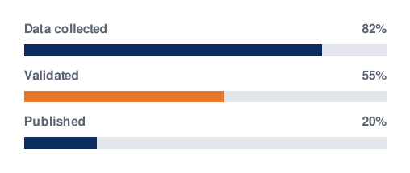
preview(bars, width = 3.4, theme = forest) # follows the theme for free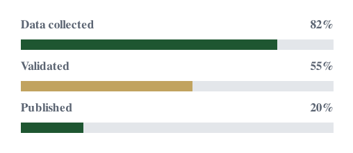
11.3 Custom blocks work everywhere
Your block is a full citizen. It can go in boxes, columns, tables and pages:
preview(bb_cols(
bb_box(bars, box_style_panel()),
bb_table(list(list("Region A", progress("", 0.7)),
list("Region B", progress("", 0.3, "accent"))),
header = c("Region", "Progress"), widths = c(1, 2)),
gap = 0.3
))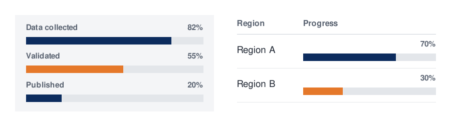
11.4 Optional extras
new_block() takes a few more optional arguments:
-
min_height = function(width): for flexible blocks, the smallest height they can be squeezed to. -
natural_width = function(width): for marks narrower than their slot, the width they actually use. Tables use it to align the mark to the right or centre. -
full_bleed = TRUE: span the full page width when placed directly on a page.
One rule: if you measure text or grobs yourself with grid (for
example convertWidth()), wrap it in
with_measure_device(). That way measurements use the same
kind of device as the export, and no stray Rplots.pdf gets
created.
Part 12: Debugging layouts
When the spacing looks off, export with debug = TRUE.
Every block’s box is outlined with a dashed line, so you can see which
gap, padding or margin is causing it:
f <- file.path(preview_dir, "debug.pdf")
export_pdf(page_north, f, debug = TRUE)
if (isTRUE(getOption("knitr.in.progress")) && requireNamespace("pdftools", quietly = TRUE)) {
png <- knitr::fig_path(".png", number = "debug")
dir.create(dirname(png), recursive = TRUE, showWarnings = FALSE)
pdftools::pdf_convert(f, dpi = 150, filenames = png, verbose = FALSE)
knitr::include_graphics(png, dpi = 150)
}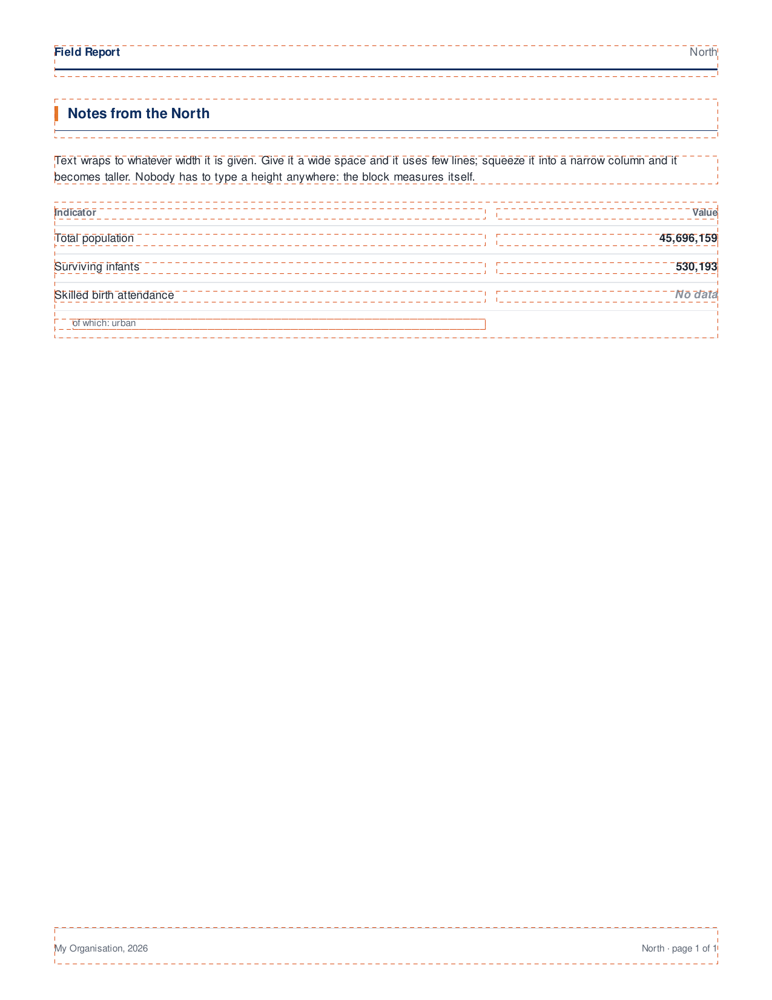
Cheat sheet
| I want to… | Use |
|---|---|
| put text on the page |
bb_text(), or just a string |
| style text |
style = "role" or text_style();
span()/link() inside a sentence |
| stack things vertically | bb_stack(..., gap =) |
| put things side by side | bb_cols(..., widths =, gap =, valign =) |
| add a box, panel or border |
bb_box(x, box_style(...)),
box_style_panel()
|
| add empty space |
bb_spacer(height); bb_spacer() to fill
leftover space |
| force a height | bb_fixed(x, height) |
| show a table |
bb_table(), cell(),
table_style(), table_style_grid()
|
| show yes/no marks |
bb_status(), bb_dot()
|
| add a legend | bb_legend(list(legend_key(...))) |
| show a plot, image or grob | pass it in, or bb_plot() / bb_image() /
bb_grob()
|
| title a section | bb_section_header() |
| a coloured band across the page |
bb_banner(), bb_full_bleed()
|
| mark missing content | bb_placeholder() |
| set up pages |
page_template(), bb_page(),
bb_document()
|
| check how full a page is | page_layout() |
| write the PDF | export_pdf(x, file, debug =) |
| change the whole look |
bb_theme() on page_template(theme =)
|
| draw something new |
new_block(measure =, render =),
text_gpar()
|